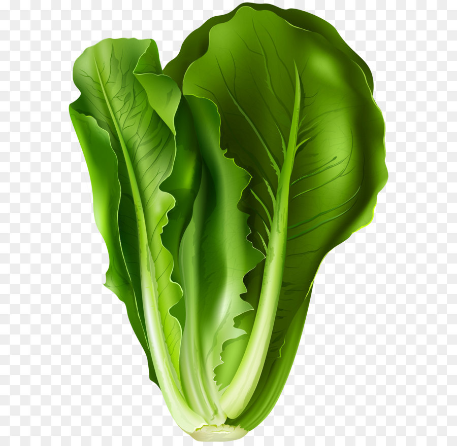
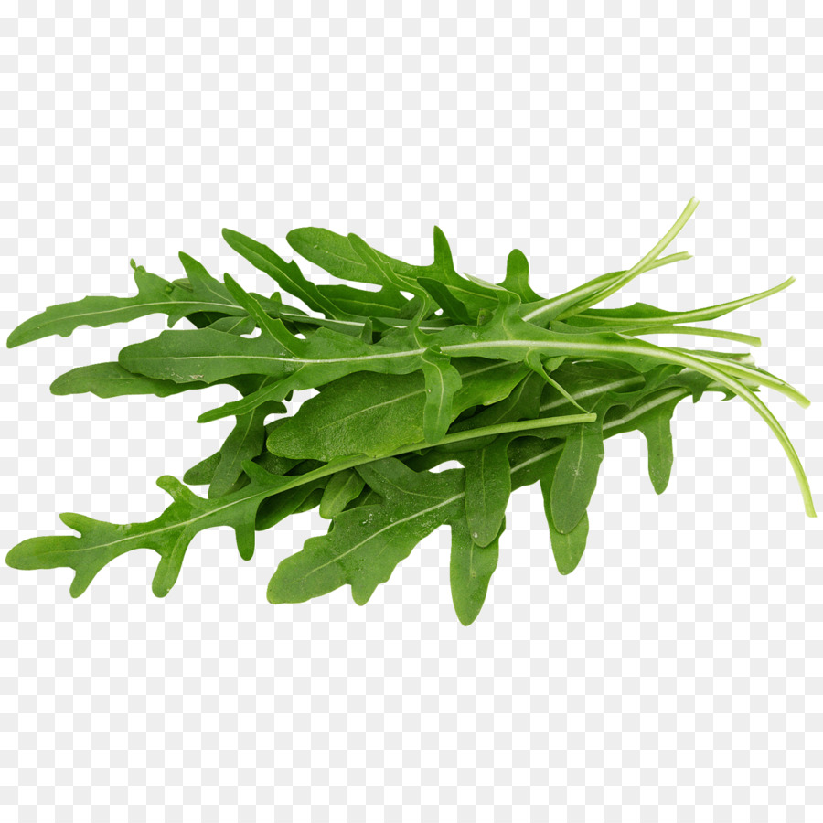

Somos una ONG dedicada a la enseñanza cultivos en los hogares
Esta ONG ha sido creada en el 2010
Nuestro lema es cultivando tus alimentos cultivas tu salud
Puedes realizar donanciones al CBU: 48701046600000093170 Banco HSBC
 ¿Qué sabes sobre la lechuga? ¿Cuáles son sus principales nutrientes? ¿Qué aporta a nuestro organismo? ¿Qué pasa si no se lava bien antes de consumir? ¿Qué hacer si te produce gases? Si quieres aprender más sobre el ingrediente estrella de la ensalada, lee lo que las expertas han contado a CuídatePlus.
 La rúcula (Erucula vesicaria) es una verdura picante que tiene su origen en la región mediterránea, donde se consume al menos desde la época romana, cuando se consideraba un afrodisiaco. También se conoce como arúgula, rúgula, ruqueta, jaramago o berro italiano. Es una crucífera como la col rizada, el brócoli o las coles de Bruselas y brinda muchos de sus mismos beneficios.